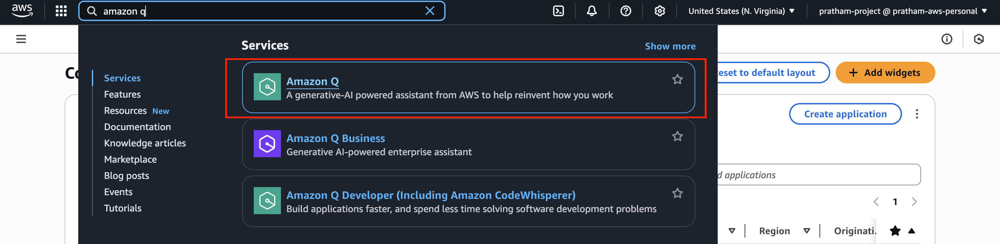

Amazon Q Developer - Hands On
Now let's have a look at Amazon Q and Amazon Q Developer, which to me are similar, but depends on how they're named. We'll explore both services and their practical applications in AWS.
Amazon Q Developer
Amazon Q Developer is designed to build applications faster and spend less time solving software development problems. This is the coding assistant on AWS that helps developers with their programming tasks.
Pricing Structure
- Amazon Q Developer Free Tier - Basic functionality at no cost
- Amazon Q Developer Pro Tier - $20 per month per user
- Includes advanced features
- Higher usage limits
From an exam perspective, you need to know that Amazon Q Developer is a coding assistant. For practice purposes, you can find YouTube videos that show how it can improve your coding skills if you're interested in this functionality.
Amazon Q for Infrastructure Management
The other way we can use Amazon Q is around helping us deal with our infrastructure (business).
- Go to Amazon Console and type in the search box for Amazon Q: 
Amazon Q provides different bundles that we can use for managing our AWS environment.
Available Bundles
- Amazon Q Business Lite
- Amazon Q Business Pro
- Amazon Q Developer Pro
Integration with IAM Identity Center
We have Amazon Q and we have connected it already to IAM Identity Center. So we saw Amazon Q Business Lite and Amazon Q Business Pro when we were doing Amazon Q Business. Amazon Q connects directly to IAM Identity Center, allowing you to manage entire subscriptions of Amazon Q directly from this UI and set settings as needed.
[IMAGE: Amazon Q subscription management interface]
Amazon Q Assistant Interface
But more importantly, I want to show you here the little button, which is Amazon Q, and it's considered to be Amazon Q Developer based on where you look at in the documentation. Amazon Q appears as a little button accessible from many different places in AWS, which I find really, really nice.
[IMAGE: Amazon Q button in AWS console]
When you first access it, Amazon Q introduces itself saying "Hello, I'm Amazon Q, and I'm your AWS generative assistant."
[IMAGE: Amazon Q welcome message]
Cross-Region Data Access
Amazon Q says it should be able to access cross-region data. And I say, yes, please continue, because this is quite important. So now we have Amazon Q in this little window, and it's accessible from many different places in AWS.
[IMAGE: Cross-region data access permission dialog]
Practical Examples and Commands
So now we can do a conversation with Amazon Q, and we have some suggestions. Now we have Amazon Q in this conversation window, and we can interact with it using natural language. Here are some practical examples:
[IMAGE: Amazon Q conversation interface with suggestions]
Listing S3 Buckets
One of the suggestions is, for example, "list my S3 buckets." So I click on it, and it's going to actually look in my account and list my S3 buckets. Remember, we created one bucket before, so Amazon Q should be able to find this bucket for us, and here it is.
[IMAGE: Amazon Q listing S3 buckets command]
So we have one S3 bucket called my-demo-bucket-knowledge-base-stefane. And we can click on it and directly go in it. So it's very nice, because now we are starting to have a gen AI assistant that is customized and knows what is going on in your AWS accounts.
[IMAGE: S3 bucket results from Amazon Q]
Generating CLI Commands
But I'm going to ask something else. So I'll request: "Please send me the CLI code to create an S3 bucket in the us-east-1 region with the name stefane-demo-amazon-q." So here we're asking Amazon Q to suggest a command for us to actually create an S3 bucket.
[IMAGE: Amazon Q CLI command generation request]
So before we saw how to create an S3 bucket by going into Buckets, and then click on Create bucket. But now I want to show you another way. So this is called a CLI - command line interface. We can run this and we should be able to create an S3 bucket.
[IMAGE: Generated CLI command from Amazon Q]
Using CloudShell
Now where to run it? Well, we can run it in what's called the CloudShell. So this button right here is CloudShell. I'm going to just open it.
[IMAGE: CloudShell button in AWS console]
The first time you open it, it can take a little bit of time to create the environment and be ready. But here we go. This was much faster than before actually.
[IMAGE: CloudShell environment loading]
And let's just paste the command we have right here from Amazon Q, and press Enter. And now the bucket has been created.
[IMAGE: Executing CLI command in CloudShell]
Verification Process
How do we verify this? Well, two options. Number one, let's see if Amazon Q is actually fast. I'm going to ask it again, "list my S3 buckets again," and now it's going to look up hopefully and find another S3 bucket.
[IMAGE: Amazon Q listing updated S3 buckets]
And also we can go, right now, I can show you, we can go directly into Amazon S3 and find that yes, a stefane-demo-amazon-q bucket was created for us. But let's verify. And in here, yes, that was awesome. So Amazon Q, using the gen AI capabilities, found that now we have two buckets in our accounts.
[IMAGE: S3 console showing both buckets]
Security and Compliance Restrictions
And again, I can always say, "suggest a command to delete the S3 buckets." And then we give the name again right here, and then it is going to generate a command line interface for us. So here we go.
[IMAGE: Request for S3 bucket deletion command]
Ah, this is related to... so you see, you have restrictions as well on Amazon Q. So sometimes if it's related to security or compliance, they're sensitive and so therefore, there's no answer generated.
[IMAGE: Amazon Q security restriction message]
But maybe I didn't ask it correctly. So let me try: "Generate the CLI command that I can use to delete the S3 bucket stefane-demo-amazon-q," and hopefully this is going to work.
[IMAGE: Revised deletion command request]
So Amazon Q right now has the capability to list things. Maybe later, it will have some capability to delete things and create things, but this, over time, is going to get better. But hopefully you get the idea.
[IMAGE: Generated deletion command or restriction]
So now if I just press my command right here, now the bucket has been removed, and I can verify this by going into Amazon S3, refreshing, and now I only see one bucket.
[IMAGE: S3 console showing single bucket after deletion]
Command Limitations
Currently, Amazon Q has the capability to:
- List existing resources
- Generate creation commands
- Provide informational responses
Future capabilities may include:
- Delete operations
- More comprehensive resource management
- Enhanced security-aware operations
Cost Analysis Features
You can also ask Amazon Q about your bill, so it can analyze your bill and help you understand how it's working. So if you have any kind of cost being incurred in your account, this would be a good place to ask and say, "Can you explain to me my current AWS charges?"
[IMAGE: Amazon Q cost analysis request]
And right now I don't have any charges, because this is a new account. So maybe the answer is not going to be very good. But in one month from now, if you're starting to see any cost data, as you can see, yes, we don't have anything right now, but later on we will have some answers from Amazon Q.
[IMAGE: Amazon Q response about billing with no charges]
Note: For new accounts without cost data, Amazon Q may not provide meaningful cost analysis initially. However, after one month of usage with some cost data, Amazon Q will be able to provide detailed answers about your AWS charges.
Key Takeaways
So that's it for this lecture. This is the power of Amazon Q - it provides a generative AI assistant that is customized and knows what is going on in your AWS accounts. And over time it's going to be more and more developed and more and more featured, making AWS management more intuitive and efficient through natural language interactions.
I hope you liked it and I will see you in the next lecture.